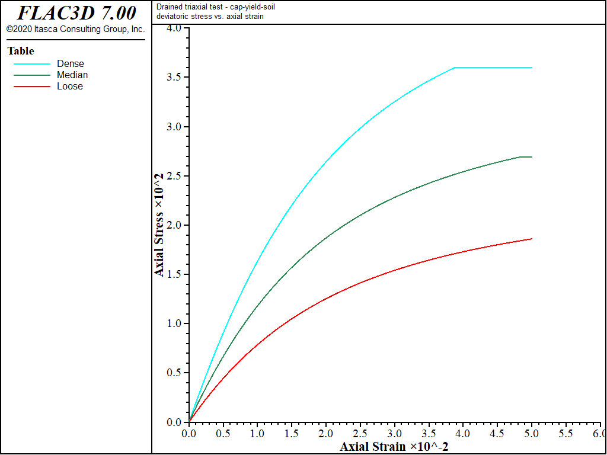
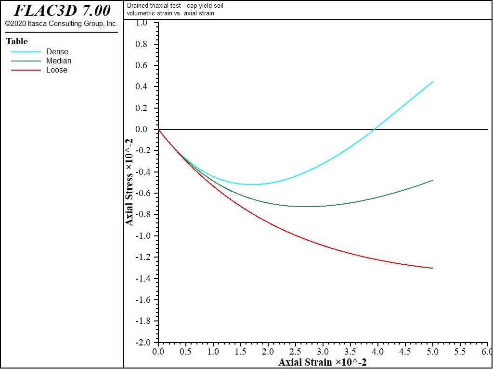

FLAC3D Theory and Background • Constitutive Models
采用 CYSoil 模型的排水三轴试验——剪胀硬化
注意
要在 FLAC3D 中查看此项目，请使用菜单命令 。 选择“ConstitutiveModels/ DrainedTriaxialDilationHardeningCYSoil”并选择“DrainedTriaxialDilationHardeningCYSoil.f3dprj”以加载。 该项目的主数据文件见本示例末尾（main data file）。
此处通过剪胀硬化重复进行恒定剪胀的排水三轴试验（drained triaxial test with constant dilation）的模拟， 这次还采用了 CYSoil 模型剪胀硬化（dilation hardening）一节中所述的剪胀硬化规律。初始剪胀为零，最终 剪胀值对于密砂、中密砂和松砂分别为 10、5 和 0 度。 三种工况的试验结果都写入表格文件。
偏应力和体积应变随轴向应变变化的模拟结果分别绘制于 图 1（Figure 1） 和 图 2（Figure 2）。第二个图显示了明显的非单调体积行为： 所有土体最初都发生压密，而更密的土在进一步剪切时发生剪胀。
换页


图 1：\(\mid \sigma_1 - \sigma_3 \mid\)（kPa）与轴向应变的关系（密砂、中密砂和松砂）——剪胀硬化。


图 2：体积应变与轴向应变的关系（密砂、中密砂和松砂）——剪胀硬化。
数据文件
DrainedTriaxialDilationHardeningCYSoil.dat
model large-strain off
; 排水三轴试验——剪胀硬化
model title "Drained triaxial test - cap-yield-soil"
;
zone create brick size 1 1 1
zone face skin
zone cmodel assign cap-yield
;
zone initialize stress xx -100. yy -100. zz -100.
zone face apply stress-norm -100. range group 'East' or 'West'
zone face apply stress-norm -100. range group 'North' or 'South'
zone face apply velocity-z 0. range group 'Bottom'
zone face apply velocity-z -1e-6 range group 'Top'
;
zone property density 1000 pressure-reference=100. exponent=1.0 ...
beta=0.35 poisson 0.2
zone property flag-dilation=0 friction-mobilized=0
zone property shear-reference=[_Gref] friction=[_friu] ...
cohesion=[_coh] dilation=[_dilu]
zone property flag-cap=0 pressure-initial=100.
;
[_z = zone.head]
fish define _cy_q
global _cy_q = zone.prop(_z, 'stress-deviatoric')
global _vsi = zone.strain.vol.inc(_z)
end
zone history displacement-z position (1,1,1)
fish history _cy_q
fish history _vsi
history interval 50
;
model step 50000
;
history export '2' vs '1' reverse table 'deviatoricStress'
history export '3' vs '1' reverse table 'volumetricStrain'
table 'deviatoricStress' ...
export [string.build('deviatoricStress%1', _IChoice)] truncate
table 'volumetricStrain' ...
export [string.build('volumetricStrain%1', _iChoice)] truncate
;
⇐ Drained Triaxial Test with CYSoil Model — Constant Dilation | Undrained Triaxial Test with CYSoil Model ⇒
| 这些内容对您有帮助吗？… 版权与免责声明 |
FLAC3D © 2019, Itasca | 原文更新于 2020 年 10 月 8 日 |